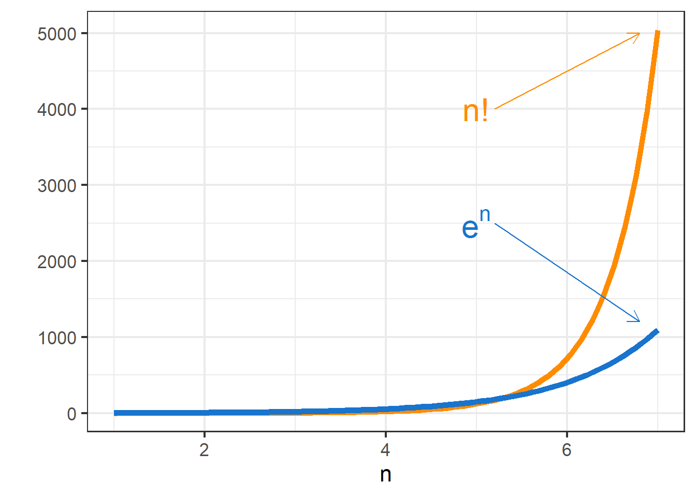
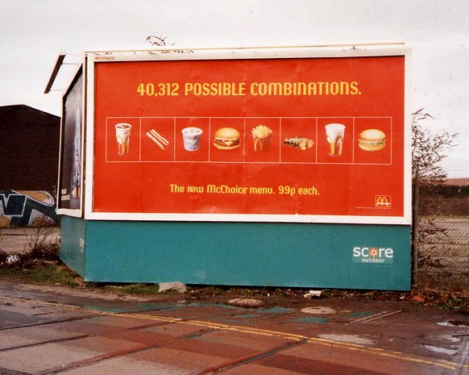

1 Herramientas de conteo
1.1 Introducción
Las herramientas de conteo sirven para contar el número de maneras distintas de obtener un cierto resultado, incluso bajo algunas condiciones o restricciones. Algunos ejemplos son:
- conociendo a los 3 ganadores de una competencia pero sin saber el orden en que ganaron, determinar de cuántas formas distintas podría haberse formado un podio entre esos 3 participantes.
- contar el número de formas en el que 5 personas pueden viajar en un auto de 5 asientos, considerando que sólo dos de ellas tienen licencia de conducir.
- contar el número de partidas de ajedrez que pueden jugarse en un torneo con 32 participantes, bajo la condición de que cada par de participantes se enfrenten una y sólo una vez.
- contar el número de estados posibles en los que puede hallarse un cubo de Rubik.
- contar el número de formas en el que 200 invitados a una fiesta pueden organizarse en mesas de 6 personas. Considerar cómo este número se vería afectado si a la fiesta asisten dos personas que se detestan y no quieren sentarse en la misma mesa.
- sabiendo que en WhatsApp se recibieron 23 mensajes de 5 chats, contar el número de formas en que estos 23 mensajes podrían encontrarse repartidos entre esos 5 chats.
1.2 Herramientas de conteo simples
1.2.1 Factoriales
El caso más simple para contar resultados posibles, del cual se desprenden todos los demás, consiste en contar de cuántas maneras puede reordenarse un conjunto de \(n\) elementos, siendo \(n\) un número natural (es decir, \(n \in \mathbb{N}\)).
Ejemplo 1
Tres personas (las llamaremos \(A\), \(B\) y \(C\)) quieren sentarse en un sofá de tres asientos. ¿De cuántas formas distintas pueden hacerlo?
Solución: Este caso es lo suficientemente sencillo como para resolverlo por enumeración exhaustiva: se pueden listar todos los resultados posibles y después contar el tamaño de dicha lista.
Los posibles reordenamientos de un grupo de 3 personas son:
| \(ABC\) | \(BAC\) | \(CAB\) |
| \(ACB\) | \(BCA\) | \(CBA\) |
Por lo tanto, existen 6 formas de que tres personas se sienten en un sillón de tres asientos.
El problema con la enumeración exhaustiva es que el número de reordenamientos crece rápidamente a medida que el tamaño del conjunto (o sea, \(n\)) aumenta. Si logramos hallar un patrón o una fórmula en la forma de contar el número de reordenamientos posibles, entonces podremos calcular el número de reordenamientos para cualquier \(n\), sin tener que enumerar todos los casos posibles.
Idea clave
Las herramientas de conteo nos permiten contar elementos sin necesidad de enumerarlos.
Volvamos al ejemplo con \(n=3\). Para empezar: ¿cuántas personas distintas pueden sentarse en el primer asiento del sofá? Es evidente que cualquiera de las tres personas en cuestión (\(A\), \(B\) y \(C\)) pueden ocupar este lugar y por lo tanto la respuesta es 3. Ahora bien, ¿cuántas personas pueden sentarse en el segundo asiento, si consideramos que ya hay una persona sentada en el primero? Las opciones se ven reducidas. Si bien no sabemos quién, una de las personas ya está sentada en el primer asiento y por lo tanto no es elegible para sentarse en el segundo asiento. Sólo las dos personas restantes pueden ocupar dicho lugar y en consecuencia la respuesta es 2. Por último, ¿cuántas personas pueden sentarse en el tercer asiento si los dos primeros ya están ocupados? En este caso la respuesta es trivial: si dos de las tres personas ya se encuentran sentadas, entonces sólo queda una persona para sentarse en el tercer asiento y en consecuencia la respuesta es 1.
En resumen, existen 3 posibilidades distintas para el primer asiento; por cada una de ellas se tienen 2 posibilidades distintas para el segundo asiento; a su vez, por cada una de las combinaciones anteriores (una persona en el primer asiento y otra en el segundo asiento) se tiene, por descarte, una sola posibilidad para el tercer asiento.
En total se tienen \[3 \times 2 \times 1 = 6 \;\text{resultados posibles.}\]
¿Qué pasaría si fuesen \(n=4\) personas en un sofá de 4 asientos? Si llamamos \(D\) a la cuarta persona, la tabla de resultados posibles para esta situación es:
| \(ABCD\) | \(BACD\) | \(CABD\) | \(DABC\) |
| \(ABDC\) | \(BADC\) | \(CADB\) | \(DACB\) |
| \(ACBD\) | \(BCAD\) | \(CBAD\) | \(DBAC\) |
| \(ACDB\) | \(BCDA\) | \(CBDA\) | \(DBCA\) |
| \(ADBC\) | \(BDAC\) | \(CDAB\) | \(DCAB\) |
| \(ADCB\) | \(BDCA\) | \(CDBA\) | \(DCBA\) |
Nuevamente, por enumeración exhaustiva podemos ver que hay 24 resultados posibles para esta situación. ¿Cómo podríamos haberlo deducido sin tener que listar cada resultado? Afortunadamente, el razonamiento para el caso \(n=4\) es análogo al caso \(n=3\).
Cualquier persona puede sentarse en el primer asiento y por lo tanto hay 4 formas distintas en las que este lugar puede ser ocupado. Para cada uno de esos escenarios, cualquiera de las tres personas restantes puede ocupar el segundo asiento, resultando en 3 formas posibles de ocuparlo. A su vez, para cada una de las combinaciones anteriores (una persona en el primer asiento y otra persona en el segundo asiento) cualquiera de las dos personas restantes puede ocupar el tercer asiento y por lo tanto se tienen 2 formas posibles de ocuparlo. Finalmente, si tres de las cuatro personas ya se encuentran sentadas en los primeros tres asientos del sofá, entonces sólo queda un escenario posible para el cuarto asiento: que sea ocupado por la persona restante.
En total se tienen \[4 \times 3 \times 2 \times 1 = 24 \;\text{resultados posibles.}\]
Es fácil ver que este razonamiento es aplicable a cualquier número de personas y asientos. En general, si se tienen \(n\) personas queriendo sentarse en un sofá de \(n\) asientos, existen \[n \times (n-1) \times (n-2) \times \cdots \times 3 \times 2 \times 1\] formas distintas de lograrlo.
El procedimiento anterior es utilizado con frecuencia en combinatoria1 y por lo tanto tiene su propio símbolo y nombre.
Sea \(n \in \mathbb{N}\), se llama factorial de \(\mathbf{n}\) a \[n! = n \times (n-1) \times (n-2) \times \cdots \times 3 \times 2 \times 1\]
Existen dos formas alternativas de definir el factorial de \(n\): en forma iterativa y en forma recursiva.
Forma iterativa: \[n = \prod_{i=1}^n i = 1 \times 2 \times 3 \times \cdots \times (n-1) \times n\]
Forma recursiva: \[n! = n \times (n-1)! \qquad \forall \; n \in \mathbb{N}\]
Un detalle a tener en cuenta con la forma recursiva es que para \(n=1\) se tiene que \(1! = 1 \times 0!\). Por convención, se considera que \(0! = 1\).
Ejemplo 2
Una lista de reproducción de Spotify está compuesta por 9 canciones. ¿En cuántos órdenes distintos pueden escucharse todas las canciones de la lista?
Solución: El problema consiste en averiguar cuántos reordenamientos son posibles para la lista de 9 canciones. Como ya vimos, esto equivale a \[9! = 9 \times 8 \times 7 \times 6 \times 5 \times 4 \times 3 \times 2 \times 1 = 362\,880 \text{ órdenes distintos.}\]
Nótese el gran número de reordenamientos que resulta de un número tan pequeño de elementos. Este número es tan grande que sería inviable resolver el problema por enumeración exhaustiva. Incluso para una lista de 5 canciones se tendrían \(5!=120\) posibles reordenamientos, los cuales ya son muchos como para escribirlos uno por uno. En líneas generales, el número factorial crece muy rápidamente, incluso más que el número exponencial.
Como ya se dijo, el factorial es la base de las herramientas de conteo, pero no es la única. Es una forma práctica de contar el número de reordenamientos de \(n\) elementos. Por ejemplo, en una carrera de Fórmula 1, donde compiten 20 autos, podemos usar el factorial para contar el número de resultados distintos para dicha carrera. Pero ¿qué pasaría si sólo nos interesara el resultado del podio, es decir, de las primeras 3 posiciones? Dicho de otro modo, dado un conjunto de \(n\) elementos, ¿cómo podemos contar el número de subconjuntos ordenados de \(r<n\) elementos?
1.2.2 Permutaciones
Intentemos resolver el problema propuesto en la sección anterior aplicando la misma lógica que nos llevó a descubrir el número factorial.
Ejemplo 3
En una carrera de Fórmula 1 compiten 20 vehículos. ¿De cuántas formas distintas puede establecerse un podio en dicha carrera?
Solución: Cualquiera de los 20 conductores es elegible para ocupar el primer puesto. A su vez, por cada una de estas posibilidades, quedan 19 conductores que podrían tomar el segundo puesto. Finalmente, teniendo ya un conductor en el primer puesto y otro conductor en el segundo puesto, cualquiera de los 18 conductores restantes pueden ocupar el tercer puesto.
En conclusión, existen \[20 \times 19 \times 18 = 6\,840 \text{ podios posibles.}\]
Ignorando el contexto del problema, acabamos de deducir la forma de contar el número de subconjuntos ordenados de tamaño \(r=3\) obtenidos a partir de un conjunto de tamaño \(n=20\).
Para resolver este ejemplo empleamos la misma técnica de “multiplicación descendente” que dedujimos para el factorial, pero esta vez nos detuvimos después de \(r\) factores en lugar de multiplicar los \(n\) primeros números naturales. ¿Cómo podríamos generalizar este procedimiento en una fórmula?
Para valores \(n\) y \(r\) cualesquiera (con \(r<n\)), el cálculo realizado es \[n \times (n-1) \times (n-2) \times \cdots \times (n-r+2) \times (n-r+1)\]
Al ser un producto, multiplicar el valor anterior por 1 no lo modifica en absoluto. Pero si escribimos ese 1 como \(\textstyle\frac{(n-r)!}{(n-r)!}\) entonces se obtendría \[n \times (n-1) \times \cdots \times (n-r+1) \times \frac{(n-r)!}{(n-r)!} = \frac{n \times (n-1) \times \cdots \times (n-r+1) \times (n-r)!}{(n-r)!}\]
Utilizando la definición recursiva del número factorial, el producto de los dos últimos factores del numerador equivale a \((n-r+1)!\) y por lo tanto la expresión anterior equivale a \[\frac{n \times (n-1) \times \cdots \times (n-r+2) \times (n-r+1)!}{(n-r)!}\]
A su vez, el producto de los dos últimos factores del numerador en esta nueva expresión equivale a \((n-r+2)!\). Aplicando sucesivamente este procedimiento se llega a que el numerador es igual a \(n!\). Es decir, la expresión anterior equivale a \[\frac{n!}{(n-r)!}\]
Hemos deducido otra herramienta de conteo importante.
Sean \(n \in \mathbb{N}_0, \; r \in \mathbb{N}_0\) 2 tales que \(r \leq n\), se llama permutación de \(\mathbf{n}\) elementos en \(\mathbf{r}\) a \[_nP_r = \frac{n!}{(n-r)!}\]
Nótese que cuando \(r=n\) se tiene \[_nP_n = \frac{n!}{(n-n)!} = \frac{n!}{0!} = \frac{n!}{1} = n!\]
Esto tiene sentido, visto que lo que estamos contando a través de este número es el número de subconjuntos ordenados de tamaño \(n\) obtenidos a partir de un conjunto de tamaño \(n\). Esto no es más que el número de reordenamientos entre \(n\) elementos, lo cual (por lo visto en la sección anterior) sabemos que equivale a \(n!\). En otras palabras, el número de reordenamientos de un conjunto de \(n\) elementos no es más que un caso particular de una permutación. Es por ello que el número de reordenamientos de conjuntos de tamaño \(n\) suele denominarse permutación de \(\mathbf{n}\) elementos y simbolizarse como \(P_n\).
Ejemplo 4
Se tienen 8 franjas de tela, cada una de un color diferente. Se pretende utilizar tres de ellas para armar una bandera compuesta por una franja superior, una franja media y una franja inferior. ¿Cuántas banderas distintas son posibles?
Solución: Partiendo de un conjunto de \(n=8\) elementos, debemos calcular el número de subconjuntos ordenados de tamaño \(r=3\). Es decir, debemos calcular una permutación de 8 en 3. \[_8P_3 = \frac{8!}{5!} = 8 \times 7 \times 6 = 336 \text{ banderas posibles.}\]
Advertencia
Más allá de que una permutación se defina como un cociente de factoriales, en la práctica no es aconsejable calcular dicho cociente. Esto es porque los factoriales tienden a ser números muy grandes; tanto es así que es muy fácil encontrarse con números cuyo factorial es imposible de calcular con la tecnología de la que hoy disponemos.3 Incluso si pudiésemos calcular los números factoriales que componen el cociente, éstos podrían ser extremadamente grandes, dificultando considerablemente los cálculos. 4 Es por esto que, de hacerse los cálculos a mano, se recomienda seguir el proceso de multiplicación descendente.
Advertencia
Si bien hablamos de subconjuntos ordenados, al calcular permutaciones no es importante que exista una verdadera ordinalidad entre los elementos (en el sentido de que uno de ellos anteceda o suceda a otro), sino en realidad que estos sean distinguibles entre sí. Claramente la ordinalidad es una condición suficiente para lograr lo anterior, pero no es una condición necesaria, como veremos en el ejemplo siguiente.
Ejemplo 5
El club de debate de una escuela secundaria cuenta con nueve miembros. La semana próxima se realizará un torneo de debate que tomará lugar en cuatro ciudades diferentes: Seattle, Baltimore, Washington y Denver. El director de la escuela debe elegir a un participante para enviar a cada ciudad. ¿De cuántas formas distintas puede hacer esto?
Solución: Nótese que en este ejemplo importa no sólo cuaĺes de los 9 miembros del club son seleccionados, sino también a qué ciudad es enviado cada uno. Se fija entonces el orden de las ciudades tal como fueron enumeradas en el enunciado, de modo que el primer participante será enviado a Seattle; el segundo, a Baltimore; el tercero, a Washington y el cuarto, a Denver. Nótese que el orden elegido para las ciudades no afecta los cálculos. Efectivamente, para cualquier orden arbitrario entre las 4 ciudades se obtendría el mismo resultado.
Hay 9 posibles participantes para ser enviados al torneo en Seattle. Por cada uno de ellos, cualquiera de los 8 restantes puede ser enviado a Baltimore. A su vez, por cada par de participantes elegidos para Seattle y Baltimore respectivamente, cualquiera de los 7 restantes puede ser asignado a Washington. Por último, para cualquier terna ordenada de tres alumnos, cualquiera de los 6 restantes puede ser enviado a Denver.
Por lo tanto, se tienen \[_9P_5 = 9 \times 8 \times 7 \times 6 = 3\,024 \text{ formas posibles.}\]
Este ejemplo plantea un escenario donde cada uno de los participantes seleccionados es asignado a una ciudad diferente y por lo tanto los cuatro roles son distinguibles entre sí. Supongamos ahora que el torneo de debate se lleva a cabo en un solo lugar, y por lo tanto los cuatro roles son equivalentes e intercambiables. Ciertamente esto llevaría a una reducción en el número de formas distintas de elegir los participantes, porque soluciones que anteriormente podían considerarse distintas (por ejemplo, el conjunto de alumnos \([A, B, C, D]\) y el conjunto \([B, D, A, C]\)) ahora deberían contarse como una única solución.
La pregunta es: ¿cuál es entonces el número de formas distintas de elegir los participantes?
1.2.3 Combinaciones
Ejemplo 6
Un club de debate de con nueve miembros debe elegir a cuatro de ellos para representar a su escuela en un torneo nacional. ¿De cuántas formas distintas puede hacerse esto?
Solución: Por lo visto en el Ejemplo 5 sabemos que, si cada uno de los cuatro puestos a ocupar fuese diferenciable de los otros tres, habría \(_9P_4 = 3\,024\) formas distintas de lograr el objetivo. Pero ahora estos puestos son todos iguales y por lo tanto sólo importa cuáles de los nueve alumnos ingresan en la selección, sin importar el orden en que se los elige. Esto implica que el resultado será menor al del Ejemplo 5. Procedamos a calcular este valor.
Supongamos que el conjunto total de alumnos es \(\{ A,B,C,D,E,F,G,H,I \}\). Un subconjunto posible de tamaño \(r=4\) es \(\{ B, E, G, H \}\). El valor \(_9P_4\) cuenta este mismo subconjunto varias veces, porque permuta sus elementos y considera dichas permutaciones como resultados distintos. En particular ¿cuántas veces cuenta cada uno? Sabemos que la cantidad de permutaciones entre 4 elementos es igual a \(P_4 = 4! = 24\). Es decir que por cada 24 subconjuntos enumerados por el valor \(_9P_4\), ahora sólo nos interesa uno.
En conclusión, se tienen \[\frac{_9P_4}{4!} = \frac{3024}{24} = 126 \text{ formas posibles.}\]
En general, dado un conjunto de \(n\) elementos, hay \(\textstyle\frac{_nP_r}{r!}\) formas distintas de elegir subconjuntos no ordenados de \(r \leq n\) elementos. Este cálculo corresponde a nuestra tercer herramienta de conteo.
Sean \(n \in \mathbb{N}_0, \; r \in \mathbb{N}_0\) tales que \(r \leq n\), se llama combinación de \(\mathbf{n}\) elementos en \(\mathbf{r}\) a \[_nC_r = \frac{_nP_r}{r!} = \frac{n!}{r! \, (n-r)!}\]
Nótese que \(_nC_r \leq \; _nP_r \quad \forall \; n, r \in \mathbb{N}_0\) tales que \(r \leq n\).
En otras palabras, cuando queramos contar el número de “grupos” (de tamaño fijo) que pueden formarse a partir de un conjunto, utilizaremos combinaciones. Si adicionalmente nos interesa establecer “roles” dentro de dicho grupo, utilizaremos permutaciones.
Ejemplo 7a
Un comité de 3 personas debe formarse a partir de un grupo de 20 personas. ¿De cuántas formas distintas puede hacerse esto?
Solución: Tenemos un conjunto de tamaño \(n=20\) y nos interesa armar un grupo de tamaño \(r=3\), pero sin asignar roles dentro del grupo (es decir, los 3 cargos a ocupar son indistinguibles entre sí). En conclusión, debemos usar una combinación: \[_{20}C_3 = \frac{20!}{3!\;17!} = \frac{20 \times 19 \times 18}{3 \times 2 \times 1} = 1\,140 \text{ comités posibles.}\]
Ejemplo 7b
Supongamos ahora que los 3 cargos a ocupar en el comité son presidente, vicepresidente y secretario. ¿Cómo afecta esto el número de posibles comités?
Solución: Como ahora los cargos son distinguibles entre sí, ya no importa únicamente quiénes son las 3 personas seleccionadas sino también el rol que ocupa cada una de ellas. Debemos usar entonces una permutación: \[_{20}P_3 = \frac{20!}{17!} = 20 \times 19 \times 18 = 6\,840 \text{ comités posibles.}\]
1.3 Herramientas de conteo con repetición
Las herramientas presentadas hasta ahora tienen una importante limitación: asumen que cada elemento de nuestro conjunto original sólo puede ser seleccionado una única vez. En los ejemplos vistos hasta ahora esta suposición es adecuada: si necesitamos llenar 3 cupos para formar un comité, no tendría sentido darle 2 cargos a la misma persona (por ejemplo: que sea presidente y vicepresidente simultáneamente). Estos son casos donde la selección se realiza sin repetición o sin reposición. Es análogo al bingo: cada vez que se saca una bola, ésta no vuelve al bolillero y por lo tanto su correspondiente número no puede ser seleccionado otra vez.
Pero existen casos donde amerita realizar una selección con repetición o con reposición. En la analogía del bingo, esto sería equivalente a extraer una bola, anotar su número correspondiente y volver a meterla en el bolillero, de modo que dicha bola podría volver a ser seleccionada en extracciones posteriores.
Cuando la selección es con repetición, las fórmulas que vimos hasta ahora ya no sirven. Esto es porque el número de subconjuntos posibles aumenta cuando pasamos de una selección sin repetición a una con repetición. Veámoslo con un ejemplo.
Ejemplo 8
Tenemos una bolsa con tres bolas enumeradas del 1 al 3. Se procede a hacer una selección con repetición de dos bolas; es decir, se selecciona una primera bola, se anota su número, se la vuelve a introducir en la bola y se selecciona una segunda bola. Si nos interesa distinguir la primera bola de la segunda, ¿cuántas extracciones distintas son posibles?
Solución: Si la selección fuese sin repetición, habría \(_3P_2 = 6\) formas posibles de seleccionar dos bolas. Estas son:
| \((1,2)\) | \((2,1)\) | \((3,1)\) |
| \((1,3)\) | \((2,3)\) | \((3,2)\) |
Pero como la selección es con repetición, también debemos contar los casos donde se selecciona dos veces la misma bola. Estos son 3 casos en total: \((1,1)\), \((2,2)\) y \((3,3)\). Por lo tanto, en total se tienen: \[_3P_2 + 3 = 6 + 3 = 9 \text{ extracciones posibles.}\]
En conclusión, debemos deducir nuevas fórmulas para las permutaciones y combinaciones en los casos donde se selecciona con repetición.
1.3.1 Permutaciones con repetición
Supongamos que tenemos una bolsa con \(n=7\) canicas y debemos seleccionar \(r=3\) de ellas. Anteriormente, bajo el paradigma de una selección sin repetición, nuestra lógica era la siguiente: hay 7 formas de seleccionar la primera canica, luego 6 formas de seleccionar la segunda (porque la primera que seleccionamos ya no está disponible) y por último 5 formas de seleccionar la tercera (porque tanto la primera como la segunda canica seleccionada ya no están disponibles). En total, existen \(7 \times 6 \times 5 = 210\) formas distintas de realizar esta selección.
Ahora bien, bajo una selección con repetición, esta falta de disponibilidad que considerábamos luego de cada selección ya no existe, porque la reposición actúa como un reset y entonces todas las canicas están disponibles en todas las extracciones. ¿Cómo afecta esto los cálculos? Hay 7 formas de seleccionar la primera canica, luego 7 formas de seleccionar la segunda y 7 formas de seleccionar la tercera. En total tenemos \(7 \times 7 \times 7 = 7^3 = 343\) formas distintas de realizar esta selección.
¿Cómo se generaliza está lógica para valores arbitrarios de \(n\) y \(r\)? Si tenemos \(n\) canicas y debemos seleccionar \(r\) de ellas con reposición, entonces hay \(n\) formas de seleccionar la primera canica, \(n\) formas de seleccionar la segunda canica, y así sucesivamente para las \(r\) canicas. O sea, en total tenemos: \[ \underbrace{n \times n \times \cdots \times n}_\text{$r$ veces} = n^r \text{ selecciones distintas.} \]
Esto nos da una fórmula para calcular permutaciones.
Sean \(n \in \mathbb{N}_0, \; r \in \mathbb{N}_0\), se llama permutación con repetición de \(\mathbf{n}\) elementos en \(\mathbf{r}\) a \[_nP'_r = n^r.\]
Ejemplo 9
Un candado numérico tiene 3 rotores, donde cada de ellos puede estar seteado en un dígito del 0 al 9. ¿Cuántas claves distintas son posibles?
Solución: Se tienen \(n=10\) posibles dígitos a ser seleccionados (con repetición) un total de \(r=3\) veces, una por rotor. Utilizando la ecuación que acabamos de deducir: \[_{10}P'_3 = 10^3 = 1\,000 \text{ claves posibles.}\]
En las herramientas con repetición, a diferencia de las herramientas simples, no es necesario que se verifique \(r \leq n\). Es decir, podemos tener una bolsa con \(n=3\) canicas y seleccionar \(r=100\) de ellas con repetición. Esto es porque, al reponerlas tras cada extracción, las canicas actúan como si fuesen infinitas y por lo tanto podemos realizar tantas extracciones como queramos.
Ejemplo 10
Se tienen 3 lamparitas en fila. Cada una de ellas puede estar apagada o encendida. ¿Cuántas configuraciones de on/off son posibles?
Solución: Una forma de pensar en este problema es como si contásemos con \(n=2\) estados (apagado y encendido) que se seleccionan con repetición para cada una de las \(r=3\) lamparitas. Por lo tanto, el número de permutaciones con repetición nos lleva a: \[_2P'_3 = 2^3 = 8 \text{ configuraciones posibles.}\] Estas configuraciones son:
| ❌❌❌ | ❌❌✅ | ❌✅❌ | ❌✅✅ |
| ✅❌❌ | ✅❌✅ | ✅✅❌ | ✅✅✅ |
donde ❌ representa una lamparita apagada y ✅ representa una encendida.
A veces debemos ser creativos al pensar cuáles son los \(n\) elementos y cuáles son los \(r\) cupos en nuestro problema. Con frecuencia se piensa en la entidad más tangible como los elementos y la menos tangible como los cupos (por ejemplo: la entidad tangible son las personas y la entidad intangible son los cargos a ocupar en un comité). Esto no siempre funciona: si pensáramos en las \(n=3\) lamparitas como los elementos y los \(r=2\) estados (“on” y “off”) como los cupos, tendríamos que existen \(_3P'_2 = 3^2 = 9\) resultados posibles, lo cual es incorrecto.
¿Cómo podemos evitar este error? Visto que estamos contando el número de resultados posibles de un cierto evento, a veces resulta de mucha ayuda escribir uno de esos posibles resultados a modo ilustrativo. La “longitud” de tal resultado será igual a \(r\). Veámoslo con los dos ejemplos anteriores:
| Problema | Ejemplo de solución | Longitud de solución | \(r\) |
|---|---|---|---|
| Candado numérico | \(2\quad 5\quad 6\) | 3 elementos | \(r=3\) |
| Lamparitas | ✅❌✅ | 3 elementos | \(r=3\) |
1.3.2 Combinaciones con repetición
Las combinaciones también pueden usarse ante una selección con repetición. La deducción de su fórmula quizás sea la más compleja de todas las herramientas, pero vale la pena, porque nos brinda una forma alternativa de pensar algunos ejercicios de combinatoria.
Ejemplo 11
En una bolsa se tienen dos canicas: una azul y una roja. Se seleccionan dos de ellas al azar y con reposición. ¿Cuántas extracciones distintas son posibles?
Solución: Llamemos \(A\) a la canica azul y \(R\) a la canica roja. Tras la primera extracción, la canica es devuelta a la bolsa y en la segunda extracción es posible repetirla. Podemos pensar en la canica repetida como un elemento adicional, como si nuestra bolsa contuviera 3 canicas: una roja, una azul, y una del mismo color de la primera canica que seleccionemos. Como aún no sabemos de qué color será, podemos simbolizarla con una estrella, como si fuera un comodín.
\[\{ \; A, \; R, \; \star \; \}\]
De este modo consideramos la repetición mediante comodines en nuestro conjunto de elementos (la bolsa de canicas). Este nuevo problema puede resolverse utilizando una combinación simple. Ahora tengo 3 elementos, pero sigo teniendo que extraer 2 de ellos.
Por lo tanto, el número de combinaciones con repetición resulta: \[_2C'_2 \;=\; _3C_2 = 3 \text{ extracciones posibles.}\]
El resultado anterior es fácilmente verificable por enumeración exhaustiva. Las tres selecciones posibles son: extraer dos veces la canica azul, extraer dos veces la canica roja, o extraer una vez cada canica. Matemáticamente, estos resultados pueden expresarse como \(\{A, A\}, \{R, R\}, \{A, R\}\). ¿Cómo se ven estos resultados bajo el enfoque del comodín?
| Original | Alternativo | |
|---|---|---|
| \(\{A,A\}\) | \(\longrightarrow\) | \(\{A,\star\}\) |
| \(\{R,R\}\) | \(\longrightarrow\) | \(\{R,\star\}\) |
| \(\{A,R\}\) | \(\longrightarrow\) | \(\{A,R\}\) |
Nótese que, bajo el enfoque de las 3 canicas, podría ocurrir que el comodín se seleccione en la primera extracción. ¿Cómo se interpretaría eso? Para tal caso cambiamos la definición del comodín: esta canica adicional repetirá el color de la canica que se seleccione en la segunda extracción. Aunque pueda parecer arbitrario, veremos en ejemplos posteriores que existe una forma sistemática de definir el valor que toma nuestro comodín.
Sigamos construyendo una solución mediante otro ejemplo.
Ejemplo 12
En una bolsa se tienen dos canicas: una azul y una roja. Se seleccionan tres de ellas al azar y con reposición. ¿Cuántas extracciones distintas son posibles?
Solución: Llamemos \(A\) a la canica azul y \(R\) a la canica roja. En este caso no alcanza con incorporar un único comodín porque, al ser tres extracciones y no dos, puede ocurrir que extraigamos la misma canica un total de tres veces: una extracción original + dos repeticiones. Por lo tanto es necesario contar con dos comodines. Usaremos un subíndice para diferenciarlos.
\[\{\; A, \; R, \; \star_1, \; \star_2 \;\}\]
Bajo una combinación simple, esto resultaría en un total de \(_4C_3 = 4\) selecciones distintas. ¿Cómo podríamos trazar una equivalencia entre los resultados del enfoque de comodines y el enfoque original del problema? Para lograr esto conviene escribir los posibles resultados en forma ordenada: primero las canicas de colores (en orden alfabético) y luego los comodines (en orden ascendiente de subíndices).
Una vez expresados de esta manera, las estrellas toman la siguiente definición: la estrella \(i\)-ésima, \(\star_i\), asume el valor del \(i\)-ésimo elemento del resultado.
| Original | Alternativo | |
|---|---|---|
| \(\{A,A,A\}\) | \(\longrightarrow\) | \(\{A,\star_1,\star_2\}\) |
| \(\{A,A,R\}\) | \(\longrightarrow\) | \(\{A,R,\star_1\}\) |
| \(\{A,R,R\}\) | \(\longrightarrow\) | \(\{A,R,\star_2\}\) |
| \(\{R,R,R\}\) | \(\longrightarrow\) | \(\{R,\star_1,\star_2\}\) |
Nótese cómo funciona la primera equivalencia: \(\star_1\) toma el valor del primer elemento en ese conjunto, o sea, \(A\) (azul). A su vez, \(\star_2\) toma el valor del segundo elemento, o sea, \(\star_1\), que ya dijimos que es una canica azul. Por lo tanto, ese resultado es equivalente a seleccionar una canica azul en las tres extracciones. El segundo resultado, por otra parte, se traduce como \(\{A,R,\star_1\} \equiv \{A,R,A\} \equiv \{A,A,R\}\) (recordemos que no importa el orden de las extracciones y por eso los dos últimos conjuntos son equivalentes).
En conclusión, se tienen: \[_2C'_3 \;=\; _4C_3 = 4 \text{ extracciones posibles.}\]
A partir de este ejemplo podemos ver que las combinaciones con repetición cuentan con la misma propiedad que las permutaciones con repetición: \(n\) puede ser menor, igual o mayor a \(r\).
Ya estamos en condiciones de deducir la fórmula para las combinaciones con repetición. Hemos visto que pueden calcularse a través de una combinación simple, la cual considera el mismo número de \(r\) cupos pero un número mayor de elementos. ¿Cuántos, exactamente? Hay que sumarle el número de comodines, el cual siempre es igual al número de extracciones exceptuando la primera, o sea, \(r-1\).
Sean \(n \in \mathbb{N}_0, \; r \in \mathbb{N}_0\), se llama combinación con repetición de \(\mathbf{n}\) elementos en \(\mathbf{r}\) a \[_nC'_r \; = \; _{(n+r-1)}C_r = \dfrac{(n+r-1)!}{r! \; (n-1)!}.\]
Ejemplo 13
Una biblioteca tiene únicamente libros de contabilidad, de finanzas y de marketing. Seleccionando cinco de ellos al azar, ¿cuántos grupos de libros son posibles?
Solución: Llamemos \(C\) a los libros de contabilidad, \(F\) a los de finanzas y \(M\) a los de marketing. Un grupo posible sería \(\{C,F,F,M,M\}\), ya que sólo nos interesa el género de cada libro.
Utilizando la fórmula que acabamos de deducir: \[_3C'_5 \;=\; _{(3+5-1)}C_5 \;=\; _7C_5 = 21 \text{ grupos de libros posibles.}\]
El ejemplo anterior muestra algo interesante: a veces las “reposiciones” son simbólicas, no reales. En este caso no teníamos canicas en una bolsa sino libros en una biblioteca. Más aún, los libros que seleccionamos no eran siempre los mismos sino que pertenecían a una gran colección.
¿Por qué, entonces, hablamos de combinaciones con repetición? Esto es porque lo que nos interesa de cada libro, lo que los identifica, es su género, y esa característica sí se repite entre elementos distintos. Matemáticamente, esto es equivalente a tener un solo libro de cada género (contabilidad, finanzas y marketing), ponerlos en una caja y realizar cinco extracciones con reposición, de modo que cada libro pueda ser seleccionado en más de una ocasión.
Si estos casos generan confusión, se recomienda nuevamente visualizar cómo sería un posible resultado, tal como se hizo en el ejemplo anterior y como se muestra en detalle en el siguiente.
Ejemplo 14
Un local de empanadas tiene sólo 4 sabores disponibles: carne, humita, pollo y verdura. Pidiendo 3 empanadas, ¿cuántos pedidos distintos son posibles?
Solución: Llamemos \(C\), \(H\), \(P\) y \(V\) a los sabores. Por enumeración exhaustiva, los posibles pedidos de 3 empanadas son:
| 1 sabor | 2 sabores | 3 sabores | |
|---|---|---|---|
| \(\{C,C,C\}\) | \(\{C,C,H\}\) | \(\{C,H,H\}\) | \(\{C,H,P\}\) |
| \(\{H,H,H\}\) | \(\{C,C,P\}\) | \(\{C,P,P\}\) | \(\{C,H,V\}\) |
| \(\{P,P,P\}\) | \(\{C,C,V\}\) | \(\{C,V,V\}\) | \(\{C,P,V\}\) |
| \(\{V,V,V\}\) | \(\{H,H,P\}\) | \(\{H,P,P\}\) | \(\{H,P,V\}\) |
| \(\{H,H,V\}\) | \(\{H,V,V\}\) | ||
| \(\{P,P,V\}\) | \(\{P,V,V\}\) |
Esto nos da un total de 20 pedidos posibles. Verifiquemos que la fórmula para combinaciones con repetición nos devuelve el mismo resultado.
\[_4C'_3 = \; _{(4+3-1)}C_3 \; = \; _6C_3 = \dfrac{6!}{3! \; 3!} = 20\]
Por lo tanto: \[_4C'_3 = 20 \text{ pedidos posibles.}\]
1.4 Reglas de conteo
Lo que vimos hasta ahora son herramientas de conteo: artificios matemáticos para calcular en forma relativamente sencilla el número de formas posibles de hacer algo. Estas herramientas respetan ciertos lineamientos llamados reglas de conteo, las cuales veremos a continuación. Bajo ciertos escenarios simples, estas reglas son útiles por sí mismas para calcular el número de formas posibles de resolver una tarea.
1.4.1 Regla de la multiplicidad
La primera regla de conteo es la regla de la multiplicidad:
Considérese un proceso que consiste en \(k\) etapas, donde cada una de ellas puede realizarse de \(n_1\), \(n_2\), \(\cdots\), \(n_k\) maneras diferentes, y donde cada una de las maneras de realizar una etapa puede combinarse con todas las maneras de las demás etapas. Entonces el procedimiento total puede realizarse de \[\prod_{i=1}^k n_i = n_1 \times n_2 \times \cdots \times n_k\] maneras diferentes.
Ejemplo 15
Si en mi armario tengo 5 camisas, 3 pantalones y 2 pares de zapatos, ¿de cuántas formas distintas puedo vestirme?
Solución: El proceso “vestirse” consta de \(k=3\) etapas: ponerse una camisa, ponerse un pantalón y ponerse un par de zapatos. Existen \(n_1=5\) formas de elegir una camisa, \(n_2=3\) formas de elegir un pantalón y \(n_3=2\) formas de elegir un par de zapatos.
Asumiendo que cada prenda de ropa puede combinarse con cualquier otra, esto resulta en un total de: \[n_1 \times n_2 \times n_3 = 5 \times 3 \times 2 = 30 \text{ vestuarios posibles.}\]
1.4.2 Regla de la adición
La segunda regla de conteo es la regla de la adición: \
Considérese un proceso que admite \(k\) enfoques posibles, donde para cada uno de ellos existen \(n_1\), \(n_2\), \(\cdots\), \(n_k\) formas distintas de ponerlo en práctica, pero donde elegir uno de los enfoques implica descartar todos los demás. Entonces el procedimiento total puede realizarse de \[\sum_{i=1}^k n_i = n_1 + n_2 + \cdots + n_k\] maneras diferentes.
Ejemplo 16
Para viajar hoy de Rosario a Buenos Aires hay disponibles 2 horarios de tren, 14 de colectivo y 3 de avión. ¿Cuántas opciones disponibles hay para viajar?
Solución: El proceso “viajar de Rosario a Buenos Aires” admite \(k=3\) enfoques: viajar en tren, viajar en colectivo o viajar en avión. Existen \(n_1=2\) formas de viajar en tren, \(n_2=14\) formas de viajar en colectivo y \(n_3=3\) formas de viajar en avión. Naturalmente, elegir uno de los enfoques implica descartar los demás (es decir, si viajo en avión no voy a viajar en tren).
Esto resulta en un total de: \[n_1 + n_2 + n_3 = 2 + 14 + 3 = 19 \text{ viajes posibles.}\]
Esta propiedad a través de la cual elegir un enfoque implica no poder elegir ninguno de los demás es lo que se conoce como exclusividad mutua. Dos elementos vinculados de este modo se denominan mutuamente excluyentes. Por ejemplo, nacer en Argentina y nacer en Turquía son condiciones mutuamente excluyentes porque, si una es cierta, la otra no puede serlo.
1.5 Mezclando reglas y herramientas
Ocasionalmente nos encontramos con escenarios complejos, para los cuales no nos alcanza con una sola herramienta de conteo para contar todas las alternativas posibles. Cuando esto ocurre, debemos hacer uso de una mezcla de herramientas, las cuales se unen haciendo uso de las reglas de conteo.
Ejemplo 17
Las matrículas de vehículos en China están compuestas por dos letras, seguidas por cuatro dígitos. ¿Cuántas matrículas distintas son posibles bajo este sistema?
Solución: El proceso de generación de una matrícula puede visualizarse como compuesto por dos etapas: selección de letras y selección de dígitos. Visto que cualquier conjunto de letras puede combinarse con cualquier conjunto de dígitos, estos dos sub-resultados deberán ser posteriormente multiplicados entre sí (regla de la multiplicidad).
En cuanto a las letras, sabemos que importa el orden en que las escribimos y que pueden repetirse, por lo que existen \(_{26}P'_2 = 26^2\) formas de elegirlas.
En cuanto a los dígitos, también importa su orden y también pueden repetirse, por lo que existen \(_{10}P'_4 = 10^4\) formas de elegirlos.
Esto resulta en un total de: \[26^2 \times 10^4 = 676 \times 10\,000 = 6\,760\,000 \text{ matrículas distintas.}\]
Ejemplo 18
En la base de datos de una empresa nacional, los empleados diurnos son identificados con un número de legajo compuesto por dos letras seguidas por dos dígitos, mientras que el número de legajo de los empleados nocturnos consiste en una letra seguida por tres dígitos. ¿Cuántos empleados distintos admite este sistema?
Solución: Podemos pensar en la obtención de un número de legajo como un proceso que admite dos versiones: una para empleados diurnos y otra para empleados nocturnos. Estas versiones son mutuamente excluyentes y por lo tanto los números de legajos distintos de cada versión deben sumarse (regla de la adición).
Usando lo visto en el ejemplo anterior, podemos deducir que existen \(_{27}P'_2 \,\times\, _{10}P'_2\) legajos posibles para los empleados diurnos y que existen \(_{27}P'_1 \,\times\, _{10}P'_3\) legajos posibles para los nocturnos.
Esto resulta en un total de: \[(27^2 \times 10^2) + (27 \times 10^3) = 72\,900 + 27\,000 = 99\,900 \text{ empleados distintos.}\]
Ejemplo 19
Se tiene un total de 14 libros: 5 de química, 4 de física, 3 de astronomía y 2 de botánica. ¿De cuántas formas distintas pueden ser ordenados en una repisa?
Solución: Nótese que cuando la consigna habla de “ordenar los libros”, esto es respecto al tema de cada uno; es decir, intercambiar de lugar dos libros de física no se considera un nuevo ordenamiento, pero uno de física y uno de botánica sí. Como tal, una posible solución tendría la forma: \[\{Q,A,F,F,Q,A,F,Q,Q,Q,B,A,B,F\}\]
Una buena estrategia sería pensar, uno por uno, cómo los libros de cada tema podrían ser posicionados en la repisa. Tomemos, en primer lugar, los 5 libros de química. Estos podrían posicionarse en cualquiera de los 14 espacios vacíos de la repisa. ¿De cuántas maneras? Para calcular esto podríamos pensar en los 14 espacios como “elementos” y en los 5 libros como “cupos” a seleccionar. Esto nos da un total de \(_{14}C_5 = 2\,002\) formas de ordenar los 5 libros de química entre los 14 espacios de una repisa.
Quedan aún 9 espacios vacíos. ¿De cuántas maneras podemos llenar 4 de ellos con libros de física? En forma análoga a lo anterior, serían en total \(_9C_4 = 126\) formas distintas. Para combinar ambos resultados, nótese que cualquiera de los ordenamientos de los libros de química puede combinarse con cualquiera de los ordenamientos de los de física. Aplicando la regla de la multiplicidad, estos valores deberían ser multiplicados entre sí. Del mismo modo se considerarían los libros de astronomía y de botánica.
Esto resulta en un total de: \[_{14}C_5 \;\times\; _9C_4 \;\times\; _5C_3 \;\times\; _2C_2 = 2\,002 \times 126 \times 10 \times 1 = 2\,522\,520 \text{ órdenes distintos.}\]
El ejemplo anterior introduce una herramienta muy útil en la combinatoria, que surge de mezclar herramientas y reglas de conteo.
Sea un conjunto de \(n\) elementos, los cuales pueden clasificarse en \(k\) grupos mutuamente excluyentes. Si hay \(n_1\) elementos en el primer grupo, \(n_2\) en el segundo, \(\cdots\), \(n_k\) en el \(k\)-ésimo, se denomina coeficiente multinomial, calculado como \[\dfrac{n!}{n_1! \; n_2! \; \cdots \; n_k!}\] al número de formas de ordenar los elementos según su grupo. Nótese que debe verificarse \(n_1+n_2+\cdots+n_k=n\). Nótese también que para el caso de \(k=2\) grupos este coeficiente equivale a una combinación simple.
1.6 Un caso real: McCombinaciones
En 2002, McDonald’s lanzó una campaña para publicitar el menú McChoice: un menú compuesto por ocho ítems (gaseosa, hamburguesa, papas fritas, batido, pancho, entre otros). Cada cliente podía elegir si quería o no incluir cada uno de los ítems en su pedido, lo cual abría la posibilidad a ordenar un menú McChoice de muchas maneras distintas. ¿Cuántas, exactamente? En su campaña publicitaria, McDonald’s afirmaba que habían \(40\,312\) formas posibles de ordenar un menú, lo cual es un gran error.

La elección de un menú específico surge de contestar “sí” o “no” a ocho preguntas específicas: ¿quiere una gaseosa?, ¿quiere un pancho?, ¿quiere un helado?, etcétera. Como cada uno de los ítems son distinguibles entre sí, la herramienta de conteo adecuada para este problema es una permutación con repetición, porque se repite ocho veces la pregunta de sí/no pero, dependiendo del orden en que se pregunta, cada respuesta está asociada a un ítem diferente. En otras palabras, se tiene un total de \(2^8 = 256\) menúes posibles, aunque lo correcto sería excluir el caso del “menú vacío”, donde el cliente contesta “no” a todas las preguntas (no tendría sentido). En ese caso el resultado es: \[2^8 - 1 = 256 - 1 = 255 \text{ menúes posibles.}\]
¿Cómo McDonald’s arribó a un número tan distinto? Se desconoce el cálculo que realizaron, visto que públicamente negaron haber cometido un error (Parker 2019), pero es fácil observar que \(40\,312 = 8! - 8.\) Dada la similitud entre la estructura de este cálculo y la respuesta correcta, es sensato suponer que McDonald’s intentó seguir la misma lógica. El mayor error que cometieron fue usar un número factorial, el cual sirve para contar el número de formas de ordenar los ocho ítems del menú. Es decir, asumieron que los clientes pedirían todos los ítems del menú y las “diferencias” entre ellos surgirían del orden en que estos alimentos fuesen consumidos (si bien esto es ilógico porque, por ejemplo, la gaseosa suele consumirse al mismo tiempo que la gaseosa, en vez de antes o después).
Un total de 154 personas presentaron una queja oficial a la Advertising Standards Authority de Reino Unido. A pesar de estar publicitando un número que resultó ser más de cien veces mayor al real, la agencia falló a favor de McDonald’s (Parker 2019). Desde entonces, se le llaman McCombinaciones5 a los números del tipo \(n!-n\), donde para \(n=8\) se tiene el número utilizado en la publicidad.
Parker, M. 2019. Humble Pi: A Comedy of Maths Errors. Penguin Books Limited. https://books.google.com.ar/books?id=qYlZDwAAQBAJ.
La combinatoria es la rama de las matemáticas que estudia la enumeración de configuraciones que satisfacen ciertas condiciones.↩︎
El conjunto \(\mathbb{N}_0\) equivale al conjunto de números naturales y el número 0, es decir que \(\mathbb{N}_0 = \{0\} \cup \mathbb{N} = \{ 0,1,2,3,4,\cdots \}\). Si bien los casos donde \(n=0\) y/o \(r=0\) son triviales y poco frecuentes en la práctica, estos son posibles desde el punto de vista matemático y por lo tanto se los incluye. Esto no significa que no tienen sentido práctico: el caso \(r=0\), por ejemplo, refiere al número de formas de elegir subconjuntos de cero elementos; se considera que sólo hay una forma posible de hacer esto (no elegir ningún elemento).↩︎
En las calculadoras convencionales el mayor número factorial que puede calcularse es \(69!\), mientras que en las computadoras actuales dicho número es \(170!\).↩︎